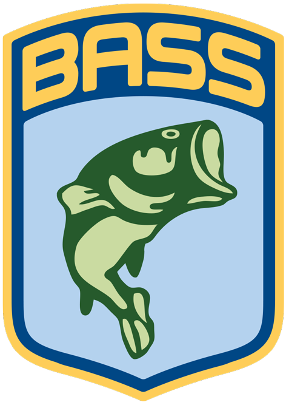

My name is Sam Canoe, I am 31 years old. Currently I am employed with one of Central Louisiana's largest security companies, while waiting for the right opportunity to pursue my next job as a professional tournament angler. I have a wonderful wife Pamela Canoe and 3 kids Kylie, Haylie, and Hunter. They have helped me get to where I am today. I am an avid outdoors man and I love teaching people, especially kids, everything I know about fishing. Along with all of my family and friends support, I have pushed myself to be a better person and angler. Tournament Bass fishing is something I have a very strong passion for. I was introduced to fishing at a very young age through my dad and stepdad. Our main fishing spots were Toledo Bend and Red River. I owned my first boat at the age of 16 and since then I have chased the chance to fish against the best. During my 2015 season I accomplished that goal. All my hard work, countless days away from home, and all the hours I have put in on the water has paid off. I qualified for the Bass Master Elite Series. The Elite Series consists of 108 of the best anglers in the world and I am proud to be able to say that I have been selected to join this select few of anglers.
2014 Acheivements:
- Qualified for ABA National Championship
- ABA Pro Win
- 1 ABA Regional Pro Win
- 2nd Place Pro ABA Divisional
- 2nd Place BassCat Owners Regional
- 1 ABA Top Ten
- 6 Local Tournament Wins
2015 Acheivements:
- ABA Toledo Bend 4th
- BassMasters Opens (Central)
- o Ross Barnett Ridgeland, MS (21st)
- o Fort Gibson Wagoneer, OK (25th)
- o Table Rock Lake Branson, MO (12th)
- Bass Central Opens AOY 3rd place
- 2016 BassMaster Elite Series Qualifier
For Partnership information click here
Bass Tournament Angling
.png)
Each year more than 6.5 billion dollars are spent on advertising for outdoor sportsmanship. Fishing, in particular, generates significant economic impact anually. More than 90 million individuals participate in fishing annually, helping to generate revenue of over $144 billion each year. Almost $23 million of the outdoor sportmans advertising each year is spent on sponsorships of professional anglers. Today, in the premier fishing organization, B.A.S.S., tens of thousands of people crowd into coliseums to watch the daily weigh-ins, and $1,194,500 is awarded to the anglers, $500,000 of which goes to the champion. The first B.A.S.S. Classic, held in 1971 on Lake Mead near Las Vegas, Nevada, awarded a winner-take-all paycheck of $10,000 and was witnessed by a straggling handful of spectators. While more than 33 million anglers participate in tournaments across the nation, B.A.S.S. is the coveted organization in which the top anglers in the world participate.
In 1984, B.A.S.S. lobbied Congress in support of the Wallop-Breaux amendment, which generates more than $200 million annually for the state fisheries. B.A.S.S., the focal point of what has grown into a multi-billion dollar fishing industry, has created a publishing giant with Bassmaster Magazine, B.A.S.S. Times and Junior Bassmaster Magazine. B.A.S.S. produces The Bassmasters weekly T.V. program, which airs on ESPN2, the Bassmaster Tournament Trail and the Bassmaster Classic, recognized around the globe as fishing's world championship.